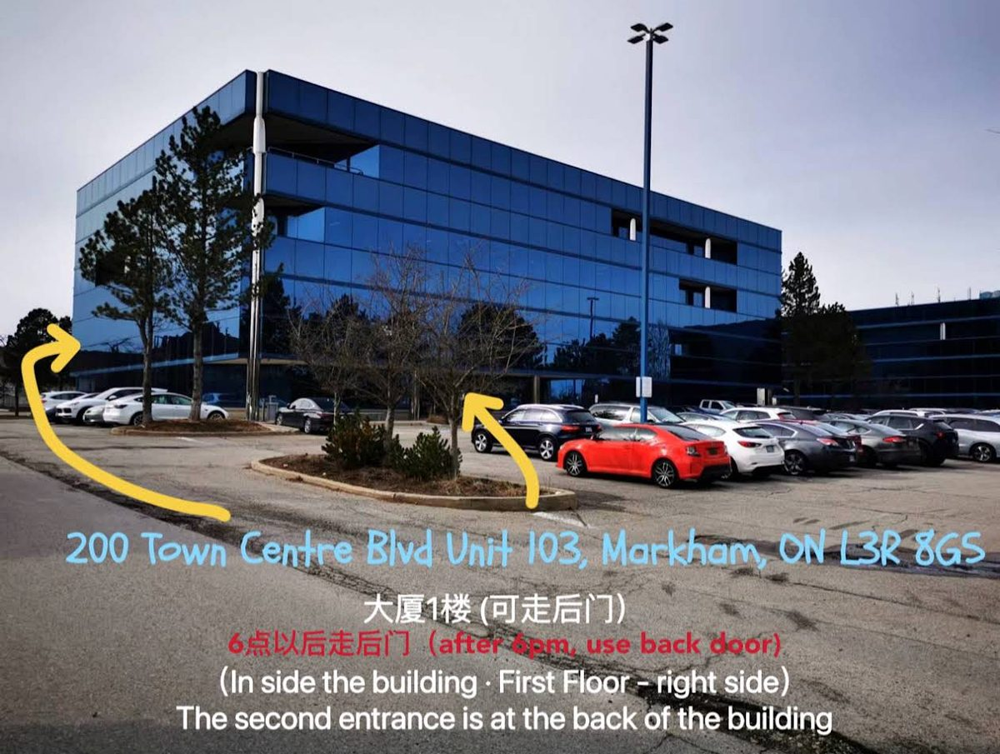
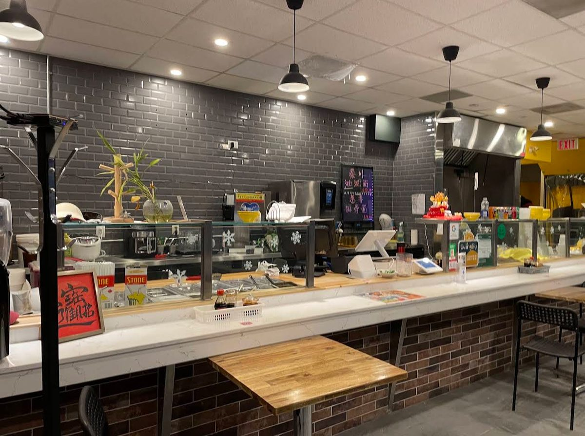

Finding us
Yes, we're in there.
We're on the ground floor of an office building at 200 Town Centre Blvd, with no big sign outside. Three steps to your bowl:
Head to 200 Town Centre Blvd
It's an office building, not a plaza. Parking is free and there's plenty of it.
Before 6 pm: use the main entrance
Inside the building, first floor, on the right side. We're Unit 103.
After 6 pm: use the back entrance
The second entrance is at the back of the building. Park in the lot behind it and come straight in.
Still lost? Call (905) 477-3888 and we'll talk you in.

